某ホテルスパ ― テスト施工 ―


温浴施設・ホテル・スパ・スーパー銭湯・式場・マンションのガラス／鏡につく頑固な 鱗状痕（ウロコ汚れ）を、 薬品を一切使わず、専用研磨シートと100Vオービタルサンダーで除去。 一般清掃では落ちない強固な水垢も、本来の透明度に戻します。
利用者から「景色が見えない」「清潔感がない」とクレームが入る。
市販の洗剤で擦っても、白いウロコ状の汚れが取れない。
高額なガラスや鏡。誤った清掃で傷をつけたくない。
綺麗にしても短期間でまたウロコが付く。日常清掃の指針が欲しい。
ホテル・スパ・温泉施設・式場・マンション・オフィスビルの「清潔感」は、ガラスの透明度で決まります。
私たちは、施設運営の品質向上パートナーとして、専門技術で根本解決します。
窓ガラスや浴室の鏡などにつく、ウロコ状の白い水垢汚れ。 その正体は、水道水や雨水に含まれるミネラル分（カルシウム、ケイ素など）が乾燥して固着したものです。 一度固着すると、通常の洗剤では除去できなくなります。
洗車や入浴後に水分を拭き取らずに放置すると、水道水に含まれる カルキ（炭酸カルシウム）などがガラスに固着します。
大気中のちりや化学物質が混じった雨水が乾燥すると、 汚れがガラスに残ります。屋外ガラスの曇りや筋ジミの主因です。
温泉施設や温浴施設では、温泉水に含まれるミネラル分によって、 より頑固なウロコ汚れが付着しやすくなります。専門研磨が必須です。
ガラスの鱗状痕は一般清掃では落とせず、専門機材・専用研磨剤・経験値が必要です。 当社は15年以上の施工実績と確立された研磨手法を持ち、 傷を付けずに鏡・ガラスを本来の透明度に戻します。 「鏡が白く曇って前が見えない状態から、全面クリアへ」という劇的なビフォーアフターを実現してきました。
温浴施設・スパ・ホテル・式場プール・高層マンション外面・ガソリンスタンドなど、 多様な施設での施工経験を有し、あらゆるガラス汚れに対応可能です。 「ホテルのスパ」と「GSの店頭ガラス」では汚れの性質も施工条件も異なりますが、 幅広い対応力は他社にない優位性です。
当社の施工は薬品不使用。 建物・周辺環境・利用者への影響がなく、 「設備の痛みが気になる」「営業中・営業時間外のいずれでも安心して頼みたい」という事業者にとって、 大きな安心材料となります。
施工だけでなく、再発防止のために現場スタッフへ 汚れの種類・発生メカニズム・日常清掃の注意点を指導します。 “施設運営の品質向上パートナー”として、清掃品質の継続的な改善に貢献します。
写真は実際の施工現場です。クリックで拡大できます。
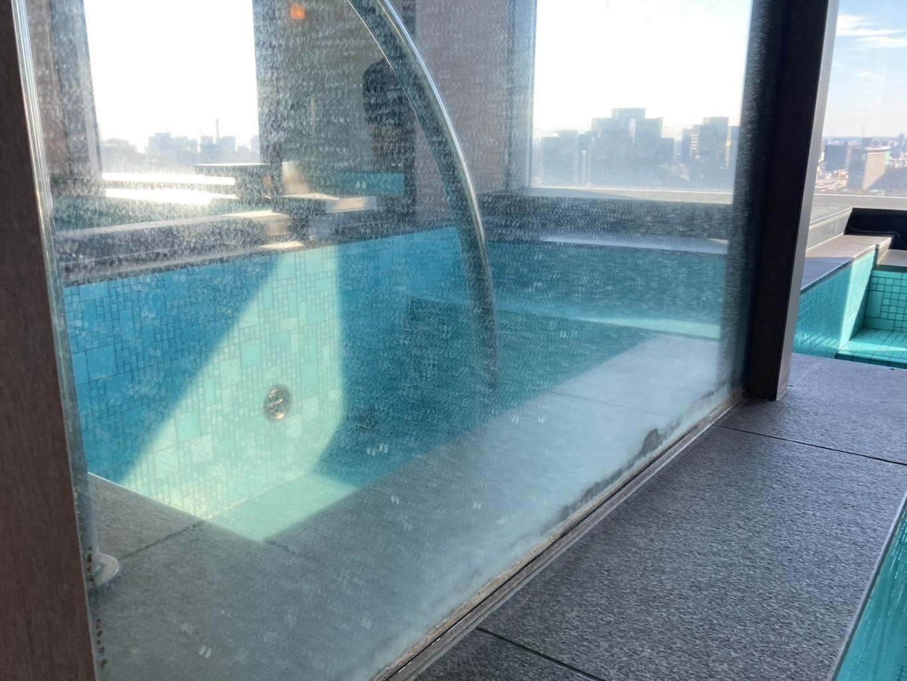
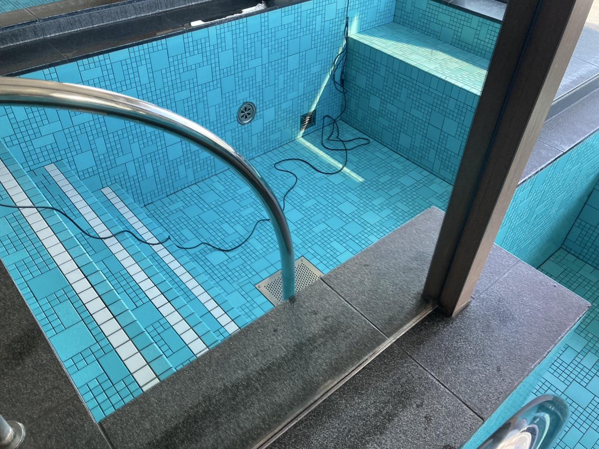
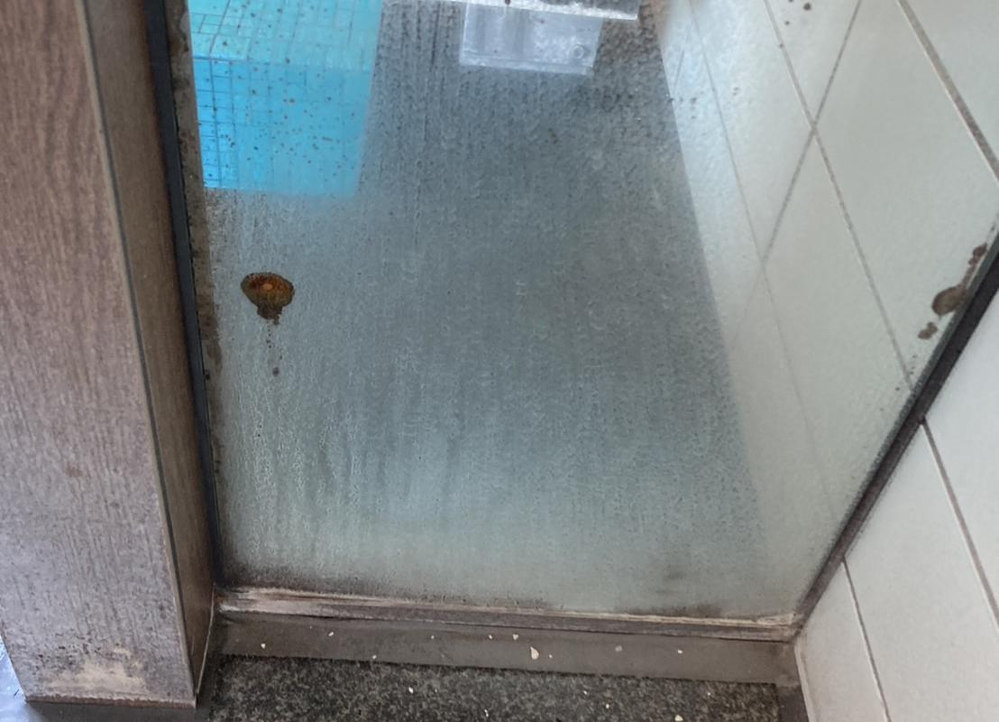
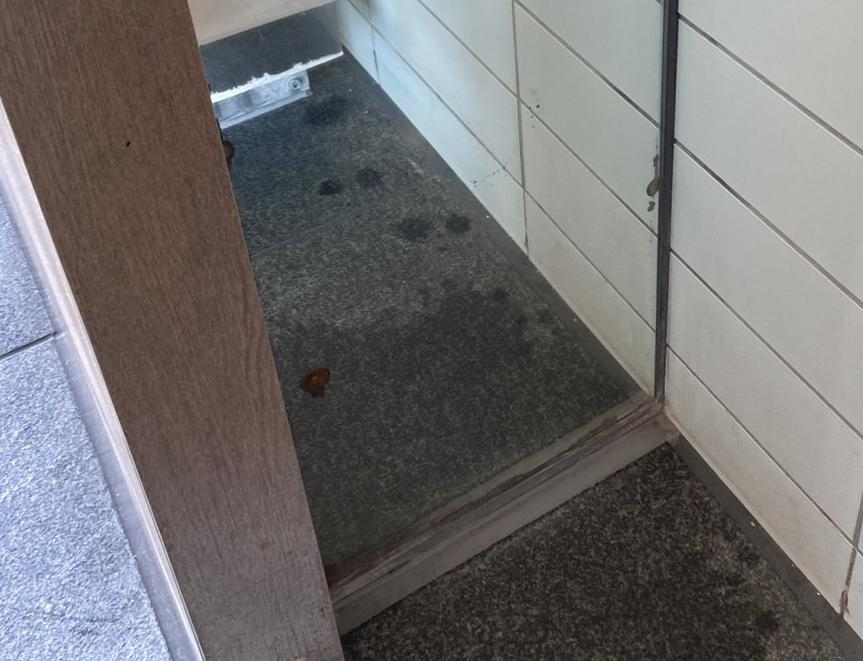


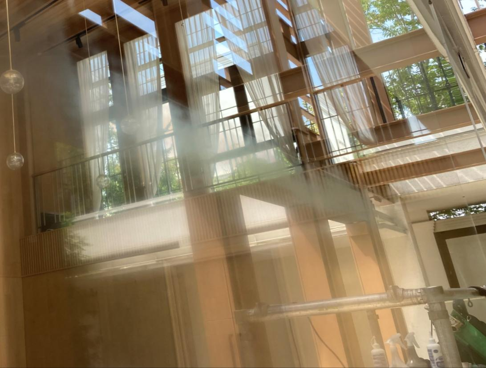
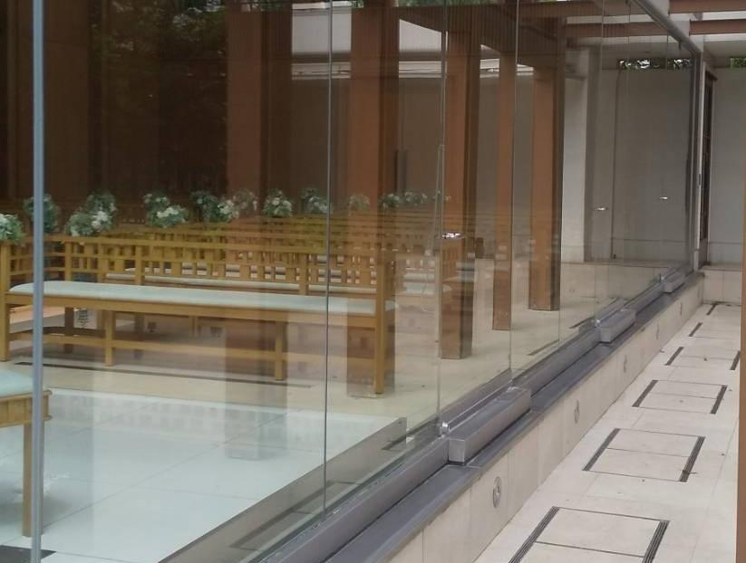


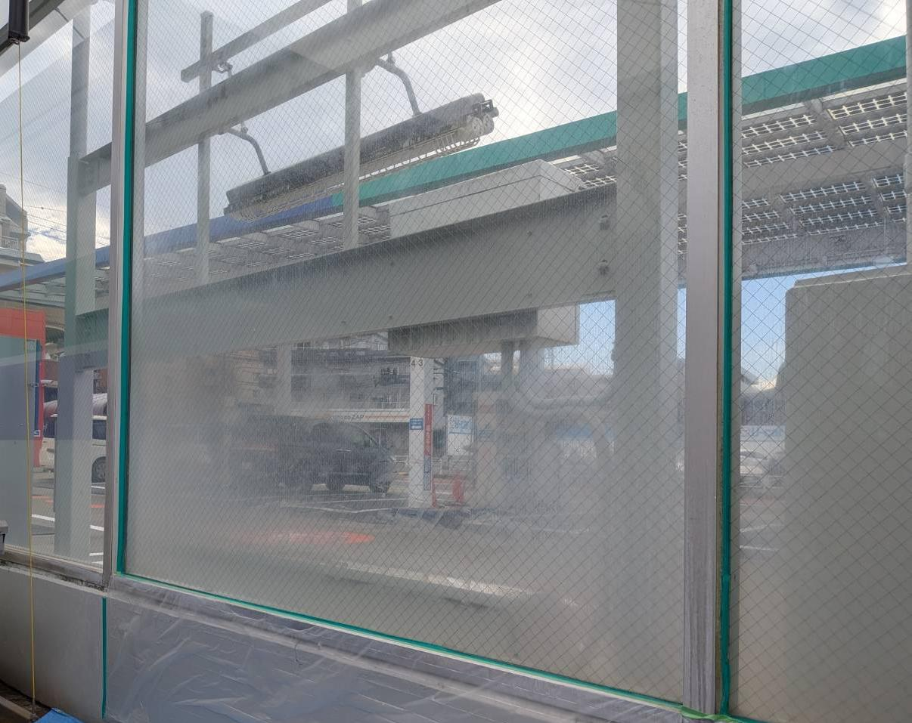
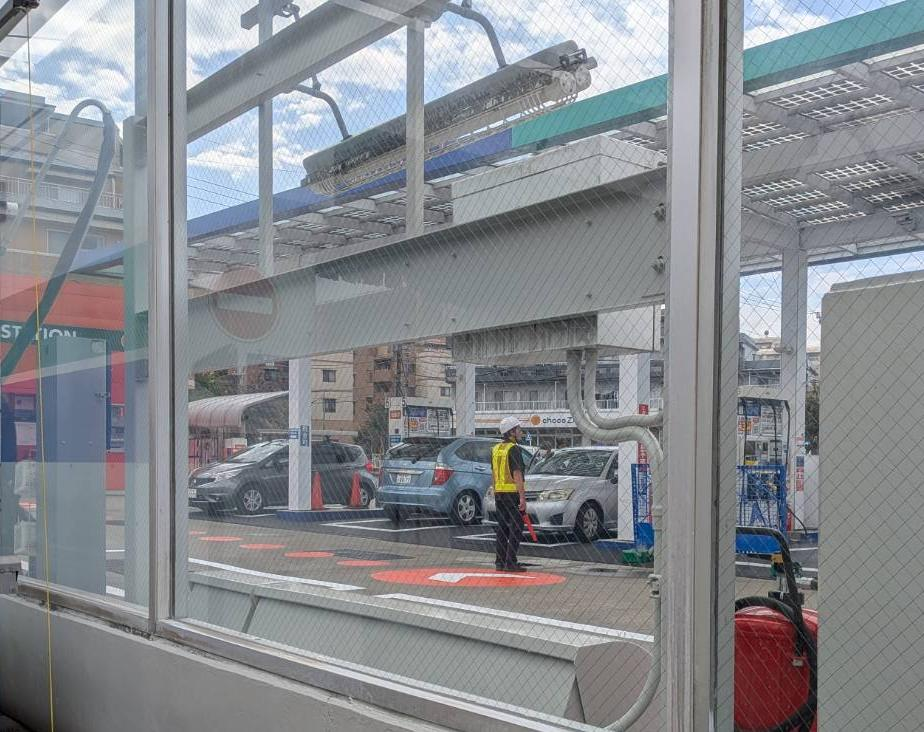
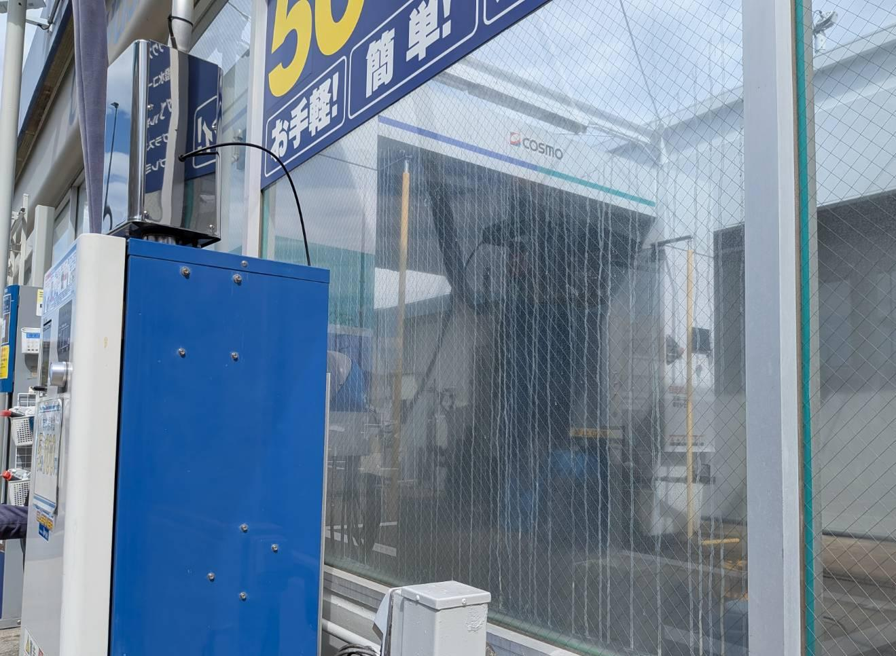
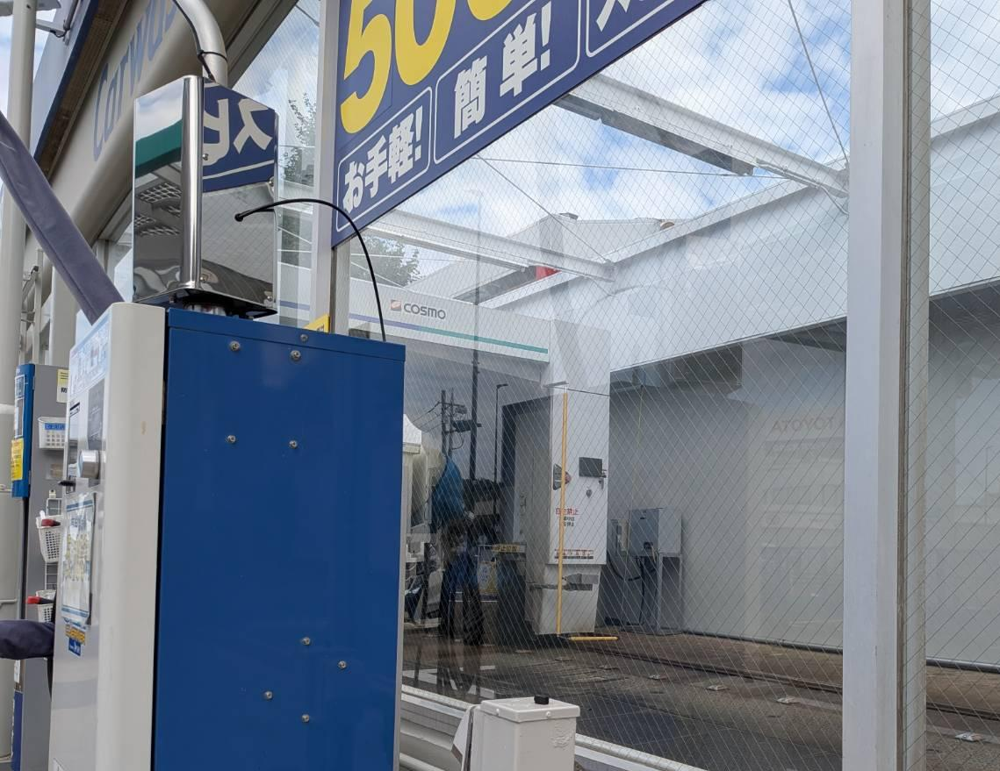
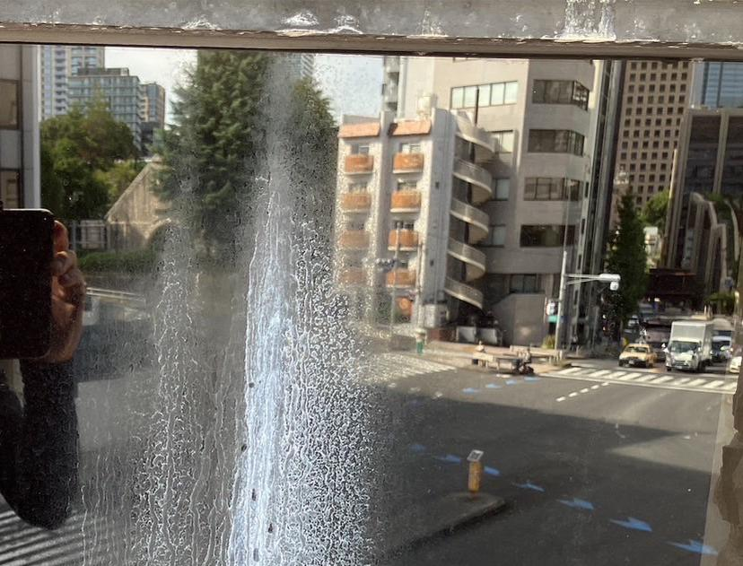
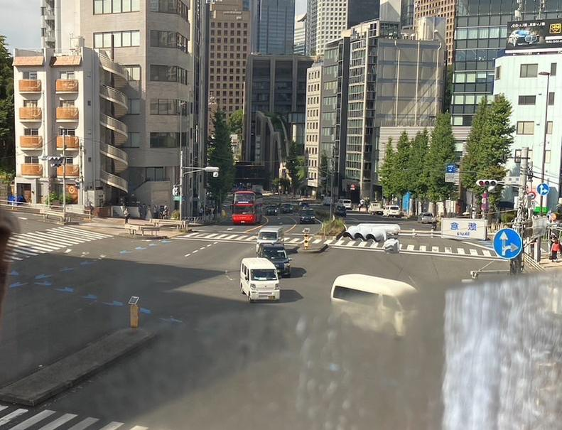
ガラス研磨専用シートと専用研磨剤を使用し、固着したミネラル分（カルシウム・ケイ素）を物理的に除去します。
電動オービタルサンダーによる均一な振動研磨で、広範囲のガラス・鏡を効率的にクリアな状態へ。
目に見える傷は付けません。当社15年以上の施工実績に裏打ちされた研磨手法で、ガラス本来の透明度に戻します。
建物・利用者・周辺環境への影響なし。営業中・営業前後どちらでも安心して施工依頼が可能です。
高額なガラス・鏡を、傷つけずに研磨します。当社15年以上の実績が品質を担保します。
― お問い合わせから完了まで ―
電話／WEBフォームから現場概要をご共有ください。
→汚れ種類・固着レベルを判定。テスト研磨で復元度合を確認します。
→範囲・工期・金額を明示。営業時間外の対応も可能です。
→専用シート＋研磨剤＋オービタルサンダーで施工します。
→仕上り確認後、日常清掃の指導を実施。再発防止までフォロー。
ガラスの専門研磨技術を応用し、御影石・浴室石材の劣化や白濁の研磨も承っています。 浴室・エントランス・水回りの石材も、本来の質感を取り戻します。
石材研磨も含めて相談する

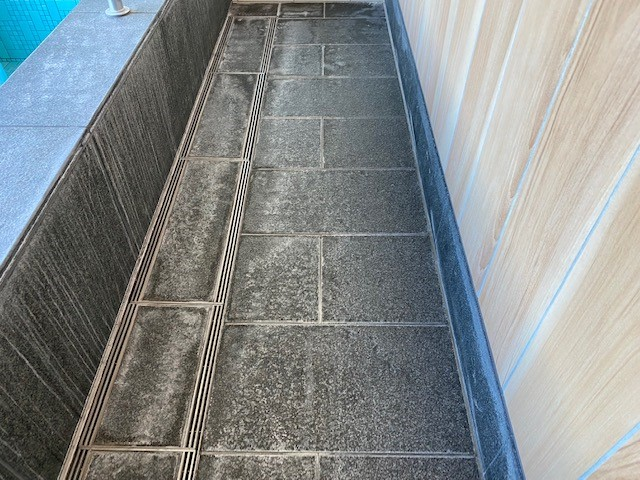
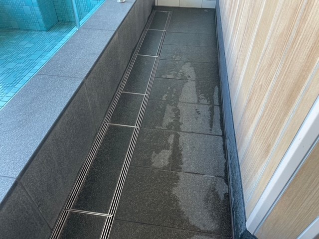
― 透明な見積りと、施工後のフォロー体制 ―
※固着レベル・面積・足場条件で変動します。
現地調査・お見積りまで完全無料。
ホテル・式場・スーパー銭湯・高層マンション・オフィスビル・商業施設・ガソリンスタンド等、業種を問わず実績あり。
仕上がりの不具合は再施工いたします。
今後のメンテナンスをご指導いたします。
その他清掃で気になる箇所がございましたらご相談ください。
1事故最大10億円の請負業者賠償加入済。
| 会社名 | 株式会社素車ビィー・エス |
|---|---|
| 代表取締役 | 百合野 毅 |
| 所在地 | 〒101-0021 東京都千代田区外神田2-13-2 森田ビル2階 |
| 電話番号 | 03-3252-1491 |
| 設立 | 1978年8月1日 |
| 資本金 | 10,000,000円 |
| 従業員数 | 18名 |
| 事業内容 | 建設業（職別工事業）／ガラス・鏡・外装材の鱗状痕除去専門清掃／光触媒施工／外壁メンテナンス／石材研磨 |
| 公式サイト | https://www.suguruma.co.jp/ |
テスト施工も承っています。お気軽にお問い合わせください。
〒101-0021
東京都千代田区外神田2-13-2
森田ビル2階